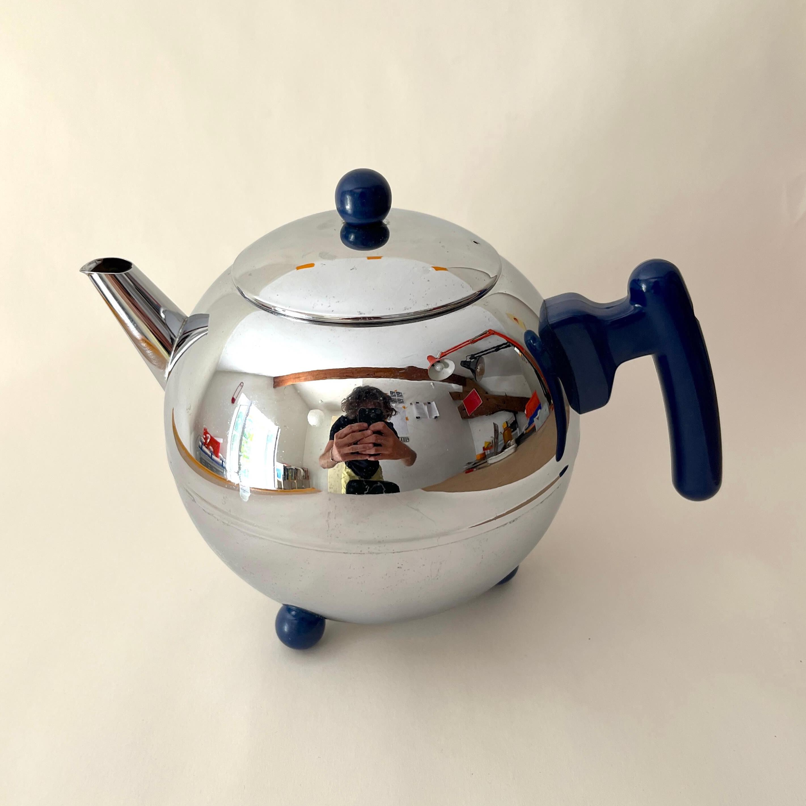

Tetera holandesa 1.2 litros
Además de bonita esta tetera es muy útil, gracias a su doble pared es capaz de aguantar el té caliente durante una hora (o esto asegura el fabricante al menos...). Su forma nos parece excepcional, con sus detalles en plástico en color azul. Tanto las tres bolitas que actúan como pies como su asa nos parecen preciosas.
Fabricada en Holanda por Bredemeijer, tiene capacidad para 1.2 litros.
La tetera está en muy buen estado por fuera. Por dentro presenta unas manchas por el uso y el calor del agua, que se pueden ver en la foto (algo normal en teteras como esta y que no afecta a su uso ni función).
Vendido
